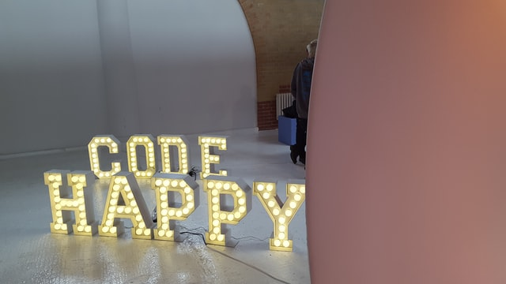

La base de una página web es el HTML y el CSS, con HTML escribes el contenido de la página y con CSS modificas el aspecto que va a tener.
HTML (del inglés "HyperText Markup Language" o, en español, "lenguaje de marcado de hipertexto") es un lenguaje de marcado, es una forma de codificar un documento que, junto con el texto, incorpora etiquetas o marcas que contienen información adicional acerca de su estructura: si es un título, un enlace o un párrafo, por ejemplo.
CSS (del inglés "Cascading Style Sheets" o, en español, "Hojas de estilo en cascada") es un lenguaje de estilos para definir la presentación visual de un documento escrito en un lenguaje de marcado, como HTML.